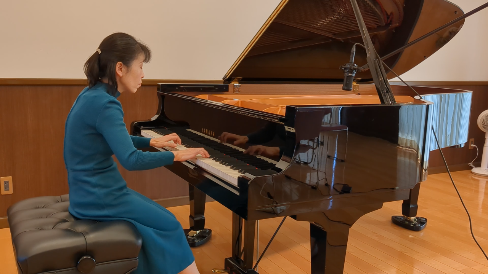
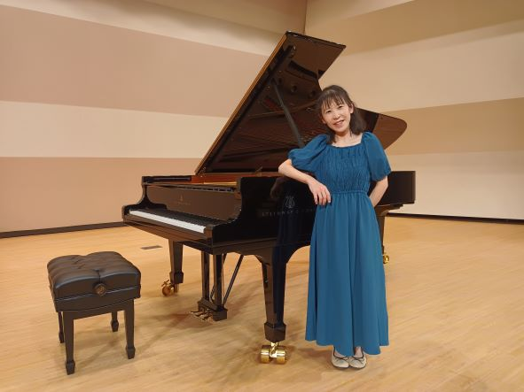

Clases particulares en Ishiodai, ciudad de Kasugai

Profesora veterana con 25 años de experiencia, graduada de la Universidad de Artes de Aichi y del programa de música del Instituto Kikuri, ofrece clases personalizadas para todas las edades: desde niños hasta personas mayores, desde principiantes hasta aspirantes a universidades de música. Matrícula mensual desde 4.000 yenes, con flexibilidad según el ritmo y la frecuencia.
🎵 Nuevo curso disponible para estudiantes que buscan ganar concursos de piano. (Honorarios y frecuencia a convenir)
También activa como pianista acompañante, YouTuber, y conferencista especial en el Seminario de Verano de Aichi 2023.

🎬 Visita mi canal de YouTube
📩 Contacto: onpurin1203@gmail.com
💡 ¡Clases de prueba gratuitas disponibles!